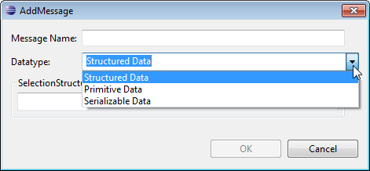
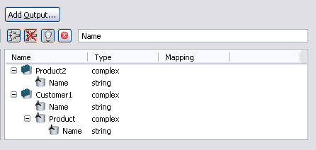
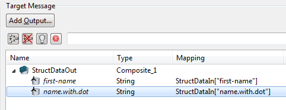

Figure: Adding Input.
To create a Message Transformation Application, select Application in the diagram toolbar palette and choose Message Transformation Application:
Figure: Creating a Message Transformation Application
The following properties can be set for message transformation applications:
The properties pane for the Message Transformation application contains a source message and a target message tree, filter fields and buttons as well as the mapping expression panel.
Figure: Properties of a Message Transformation Application.
The source and the target message tree contains the names of all messages selected as input and output messages as top level nodes.
Note that some XSD types specified in structured data will be converted to JavaScript types when used in Message Transformation applications. Please refer to the section Mapping XSD Types of chapter Using Structured Types in Process Data for detailed information on how this mapping is performed for specific XSD types.
Multiple input and output messages can be specified. Please note that the mapping of Primitive Data Enumeration Types is not possible.
Above the filter entries of the source and target message tree you find an Add Input and Add Output button respectively. Selecting these buttons will open a dialog, where you can define the message to add.
Figure: Adding Input.
Choose the type of data in the Datatype entry field. Supported data types are:

Figure: Choose the Data Type.
Select the type specification for the data type selected in the Datatype entry field.
In the Selection Structured Data section select a structured data type definition from the drop-down list providing all structured type definitions available in your model.
Figure: Selecting Structured Data
In the Selection Primitive Data section choose a concrete data type for your primitive data type in the drop-down list.
Figure: Selecting Primitive Data
In the Selection Serializable Data section click the Browse button to open a classloader dialog, where you can choose an application class provided in the list.
Figure: Selecting Serializable Data
Optionally adapt the provided message name. A default name
<data_type_name>n is suggested in the name entry.
Whereby n represents the number of already defined source or target
messages for the transformation.
Arbitrary message names can be specified. If the message name is already in use, an error symbol is displayed in front of the entry and OK is disabled:

Figure: Duplicate Message Name Error
The added messages are displayed in the Message Transformation panel according to their data types.
Primitive Data type messages are displayed as primitive data icon with the message name and the according concrete type, as shown in the following screenshot:
Figure: Primitive Data Type Message
Structured Data Type messages are displayed as a tree having all available attributes listed beneath the structured type.
Figure: Structured Data Type Message
For a serializable data type class, only those fields are displayed,
which have a public accessor method. For example if the selected class has the
methods setFirstname(String FirstName) and getFirstname(), the
field FirstName is displayed accordingly.
Figure: Serializable Data Type Message
To remove messages right-click the entry in the message tree node and choose Delete Message:
Figure: Deleting a Message
A confirmation dialog opens to confirm the deletion:
Figure: Confirmation Dialog for Deleting Messages
Several mapping options are provided for the target message fields.
To clear a message expression, right-click the message and select Clear Mapping Expression:
Figure: Clear Mapping Expression Option
To toggle a breakpoint of a message field, right-click and select Toggle Breakpoint. For detailed information on how to use breakpoints during debugging of message transformation please refer to the chapter Debugging Message Transformations.
Figure: Toggle Breakpoint Option
The sources messages tree allows multiple selection via left mouse click and CTRL + left mouse click on arbitrary fields. When selecting a field, all dependent fields in the other message tree will be marked as bold:
Figure: Dependency marked as bold.
If the selected field in the target message is a leaf field, the corresponding JavaScript expression is displayed in the expression mapping field, as described in the section Mapping Expression Field.

Figure: Message Transformation.
The following drag and drop shortcuts are provided to support fast creation of mapping expressions:
Figure: Single Source Field Mapping
Figure: Multiple Source Field Mapping
Figure: Multiple Source Field Mapping on equal Field Names
Figure: Complex on Simple Field Mapping
Before a drag and drop gesture overwrites the content of the corresponding mapping expression, a confirmation dialog opens:
Figure: Overwriting Confirmation Dialog
Note that the mapping on root nodes is not possible.
In the Message Transformation application a source element can be dropped into a target field which is part of nested array structure.
Figure: Message Transformation Application with Nested Structured Data Array
Drag the source element typename and drop it into nested array of target field name in the location node.
A dialog is displayed when a source element is dropped into nested array.
Figure: Index Configuration
The dialog consists of two tables which are located side-by-side from the In/Out Message pane within the Message Transformation Application property page. Note that the content of the table is reduced to one message per table. The source tree shows the input message and the target tree shows the the message chosen as mapping destination for the selected source element. This means only the tree paths leading to the leave nodes that are involved into the corresponding mapping operation are displayed.
Figure: Leaves for Source and Target Message
Note that the Source Message and Target Message tables consists of two columns:
The row which contains an element of multiplicity n>1, the index column has a text editor that enables the user to modify the corresponding indices.
Figure: Location Index Cofiguration
Once the index configuration is done the mapping expression is generated.
Figure: Mapping Expression
Adding a source element into target element which is an array of same data structure. Drag the Address1 source element and drop it into the addresses array which has Address as a type defined.
Figure: Source to Target of Same Data Structure
The dialog gets displayed for Index Configuration.
Figure: Index Configuration for Source to Target of Same Data Structure
In this dialog, you can define the corresponding index settings. Also the Mapping strategy can be defined using the following options:
If Append element option is selected then at runtime the instance of the selected input messgae is added to the end of the already existing collection within the instance of the output message. Considering the Address1 and addresses drag-drop scenario an additional address is added to the address list of the Person1 type. The Mapping expression generated after selecting Append Element option:
Figure: Mapping Expression - Append Element
If Overwrite existing elment option is selected then at runtime the instance of the selected input message is added to a specified index of the already existing collection within the instance of the output message. The mapping expression generated after selecting Overwrite Existing Element option:
Figure: Mapping Expression - Overwrite Existing Element
You can enter an index which refers to another source input message field. The modified mapping expression for overwritten element would look like:
Figure: Mapping Expression - Overwritten Element
Assume you want addresses of source element Person2 into the target element Person1. The drag and drop of address attribute would help to get the address copied.
Figure: Deep Copy - Person2 address to Person1 addresses
In the mapping expression the code generated copies all attributes and sub-attributes from left to right.
Figure: Deep Copy - Generated Code
The dependencies between source and target messages fields are displayed by highlighting the corresponding fields in bold text:
Figure: Dependency Highlighting
If the source messages tree has the focus, all fields in the target messages depending on the selected fields in the source messages are highlighted.
If the target messages tree has the focus, all fields in the source messages contributing to the expressions of the selected fields in the target messages are highlighted.
Highlighted nodes are always visible. The tree view is scrolled so that the first highlighted node is the first visible node in the scrollpane. Highlighting of leaf nodes always implies highlighting of the entire node hierarchy above.
The selection of a composite field causes highlighting of all fields in the target message whose expressions contain fields in the composite source field or its child fields recursively. For example selecting an entire source message highlights all target field hierarchies using fields of this message.
Figure: Dependency Highlighting of Composite Fields
All filters except the text filter can be switched on and off with icon select buttons grouped above the tree views for input and output messages.
The filter buttons support the selection of:
The top level tree nodes representing source and target messages are always visible, as the filters apply to message fields only and not to the source or target messages themselves.
You find the text filter for source and target messages as a text entry field to the right of the other filter buttons.
The text filter allows to enter space-separated filter strings. Entering filter strings initiates a case-insensitive OR-filtering of the names of all fields in all source or target messages for the containment of the specified strings. For example when entering "hello world", there will be a filter for the words "hello" and "world". Every change in the filter string entry except adding leading or trailing spaces initiates a new filtering. The retrieved fields are displayed and if necessary tree nodes are expanded. All other field tree nodes are omitted. The scrollpane of the tree is scrolled to the first retrieved entry. The retrieved fields are neither highlighted nor selected. The message names themselves are not filtered. The top level tree nodes representing messages are always kept visible.

Figure: Filtering by the String "Name"
To display only the highlighted fields select the following icon:
Now the icon switches to a yellow color and only the highlighted fields are visible:
Figure: Filter Highlighted Fields
Select the following icon to display only the fields which have mapping expressions:
Figure: Filter Fields with Mapping Expressions
Select the following icon to display only the fields which have no mapping expressions:
Figure: Filter Fields with No Mapping Expressions
Select the following icon to display only the fields which have invalid mapping expressions:
Figure: Filter Fields with Invalid Mapping Expressions
When mapping serializable data, the mapping code in the expression field
automatically takes the getter and setter methods provided by the
serializable class. For example, mapping a structured data attribute Person1.name
to a serializable Data field Person2.Name, would result in an expression using
the setter method of the according field (e.g. Person2.setName(Person1.name)).
Figure: Code Created for Serializable Data
Every mapping is performed as the evaluation of a JavaScript expression with preceding supporting statements or function definitions. The mapping expression contains a single expression which describes the content of the corresponding field in the output message for which the mapping is defined.
The mapping expression can be interpreted as an assignment, for example:
<output message field> = <user-defined function>(<input message field>) +
<JavaScript function>(<input message field>);
Such an expression becomes an executable program, which can be executed by any JavaScript interpreter and leaves the output message field initialized with the result of the expression in the expression editor.
You can switch between Basic and Advanced mapping expression by disabling or enabling the Advanced Mapping Mode checkbox on the left upper side of the mapping field.
Figure: Switch Mapping Mode Button
Refer to the following sections for detailed information on the possible actions in the Mapping Expression editor:
You can choose the basic mapping expression, if you like to return the value of the expression editor directly to the selected message. For example:
Figure: Example for Basic Mapping Expression
The message field name of the selected message is added automatically on top of the mapping field. The value of the expression is returned to that message after evaluation.
The Advanced Mapping option provides an advanced mapping expression editor to create a more complex mapping and to enter JavaScript code. For example:
Figure: Example for Advanced Mapping Expression
Performing a mapping from a serializable data type message generates an advanced mapping which contains the getter/setter method pertaining to the fieldname. For example:
AccountPKTarget.lastname = AccountPKTarget.setLastname(AccountPKSource.getLastname())
Figure: Serializable Data Type Message Mapping Example
Note that some identifiers, which can be used in structured data types, are not supported in JavaScript. The following identifiers are not supported:
whereby underscores, digits or dots not used as first character are supported (e.g. first_data, data1, data.dot).
In case you use identifiers containing hyphens or dots in JavaScript, you can set
the identifier in square brackets and quotation marks as a workaround. For example
as referencing a structured data via StructData.name.with.dot would cause an error,
you could use StructData["name.with.dot"] instead. The following screenshot
shows example mappings using brackets to access structured data containing a dot or a
hyphen:

Figure: Identifier Workaround Mapping Example
Mapping types, which are different, but which are both represented as Number
in JavaScript, can cause a hidden type mismatch. This can be avoided by using
the expression toFixed(0).
For example use the following expression, if you map a structured data
element with type int to an element with the type double:
Figure: Type Mismatch Workaround
Please refer to the section Mapping XSD Types of the chapter Defining Structured Types for detailed information on how specific XSD types are mapped to JavaScript types.
Selecting a variable will highlight all it occurrences:
If the highlighted variable is a field of the input message, the corresponding tree node in the input message tree is selected without returning the focus to the tree and the highlighting of corresponding output message fields is applied. Input message and output message trees are scrolled and expanded as needed.
The editor provides auto-completion for available methods as well as parameter definitions.
Press Ctrl-Space to show according proposals.
Figure: Default Proposals for Methods.
Choose a function and select enter to add this to your code.
There are different ways of accessing element content:
message2.header.field[i] = message1.header.field[i];
message2.header.field[i]["@tag"] = message1.header.field[i]["@name"]+"test"; message2.header.field[i]["@"] = i+"testcontent";
message2.header.field[i].setContent(message2.header.field[i].getContent()+"testcontent");
To access attributes use the usual code completion or access via ["@attributename"], e.g.:
message2.trailer.field.attributename = "abc"; message2.trailer.field["@attributename"] = "def";
Please note that in the JavaScript expressions, unlike the access paths,
the attribute name should not be prefixed with an @ symbol
(except in the ["@attributename"] form).
Syntax and other errors in the mapping expression editor are underlined in red and highlighted with a status symbol at the beginning of the mapping column:
Figure: Error in Mapping Expression
Tool tips for syntax problems are provided:

Figure: Error Tool Tip
Moving the mouse over a function, variable or field, will invoke a window with information derived from the Javadoc for functions and fields. Selecting F2 will pin this window.
Figure: Showing JavaDoc Information.
You have the option to add instances of classes, which reside in the classpath, to the Message Transformation Application context.
Besides the Advanced Mapping checkbox, you find a button External Classes.... Click this button to add or remove external classes.
Figure: Configure External Classes
A dialog opens showing all classes that are already added and allows you to add and remove classes.
Figure: Configure External Classes Dialog
The classes are displayed within a table. Each class is displayed in a row in two columns, whereby the first column shows the name of the instance and the second column shows the name of the class.
To add a class, click the Add button. A dialog opens, where you can browse to your class.
Figure: Browse to the class to add.
A default name which derives from the class name is added in the Instance Name field. To change this name enter another name in this field. Please note that the name has to be unique. To avoid name clashes, the already defined In- and Out messages and already defined external classes are checked. In case the name is not unique, this is indicated with an error icon at the right side of the Instance Name entry.
Figure: Error indicating non-unique Name.
To remove a class from context, select it in the table and click the Remove button.
Figure: Remove Classes from Context.
If a class or a jar file carrying one or more classes is removed from the class path, they disappear from the type system as well. That means that message transformations which are created based on the presence of such classes get invalid. This invalidity is reflected in the user interface within the Problem View, which contains a corresponding warning entry, informing that the JavaScript used in a specific Message Transformation Application is not valid.
Figure: Validation Warning
To remove such warning do one of the following:
! Tip: To directly edit the property dialog of the according message transformation application, double-click on the warning entry.
An error sign indicates a missing class reference for each class in the Configure External Classes dialog. Additionally an error message is displayed in the lower part of the dialog, informing that at least one external reference is not satisfied. It suggest to fix the classpath or to remove the reference.
Figure: Error Message indicating Missing Classes.
Now code completion is provided on those service classes. The message transformation application type recognizes these classes and their methods.
Figure: Available Code Completion
The configurable retry mechanism provides the facility to retry an operation in case the target service is temporarily unavailable.
For more information, please refer to Retry Mechanism of Non-interactive Applications section of the Applications Concept chapter.
If you enable the Retry functionality for a Message Transformation application, you have to define the number of retries and the time between retries in seconds. Note that the maximum number of retries is 10 and the maximum time between retries is restricted to 60 seconds. Additionally you can enable the retry to be performed on application side and thus disable a retry on engine side.
An application with an enabled retry functionality will retry for the defined number of times with a pause of the defined number of seconds, until it succeeds. If the application still fails after the defined number or time, it will no longer retry.